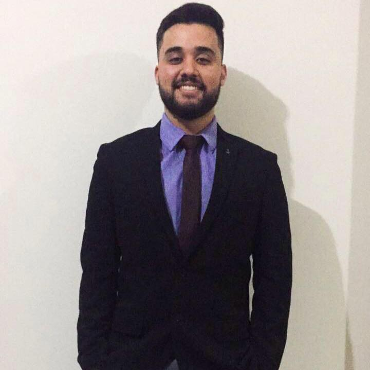

Sobre mim
Me chamo Vinicius Fabiano Silva, tenho 23 anos e estou atualmente cursando o 7 semestre de Engenharia da computação. Dentre os diferentes ramos do curso eu possuo interesse em desenvolvimento focado tanto em Back end quanto front end além de estar fazendo
um curso atualmente de python buscando um maior conhecimento na área.
Projetos
Projeto 1
Projeto em php consumindo API do google
Esse projeto foi feito de acordo com um tema que tínhamos na faculdade, é um projeto de denuncia que utiliza e consome a API do google maps. O usuario cria sua denuncia e ele aponta no mapa corretamente onde aconteceu.Projeto 2
Sistema de chat utilizando node
Projeto criado junto com uma trilha em node disponibilizado pela rocketseat onde tem-se o chat do usuário e o chat do atendimento.Projeto 3
Sistema em php para consulta
Projeto criado de acordo com um tema da faculdade. O usuário tem seu cadastro, podendo chegar e utilizar o chatbot para marcar uma consulta, onde a atendente teria completo acesso para ver os horários marcados e entrar em contato. marcados.